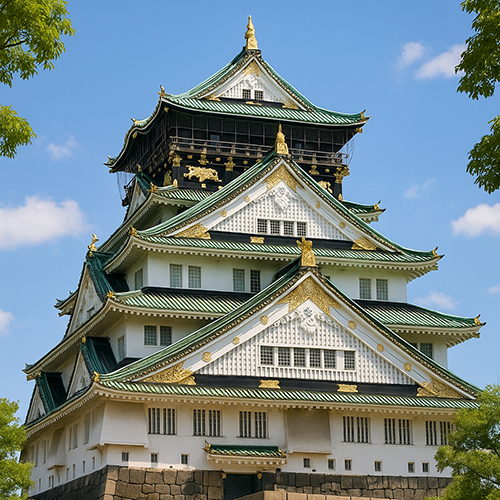

Château d'Osaka – Splendeur des Samouraïs et Pouvoir Stratégique au Cœur d'Osaka
Avec ses toits vert émeraude et ses ornements dorés dominant l'horizon de la ville, le Château d'Osaka (大阪城, Ōsaka-jō) est bien plus qu'un simple point de repère : c'est le cœur même de l'héritage samouraï du Japon. Construit à la fin du XVIe siècle par le légendaire seigneur de guerre Toyotomi Hideyoshi, cette forteresse a joué un rôle clé dans l'unification du Japon.
Un Château Né de l'Ambition
Construit en 1583, le Château d'Osaka était le grand symbole de l'ascension de Hideyoshi, passant de ses humbles origines à l'un des "Grands Unificateurs" du Japon. Conçu pour être le château le plus imposant de son époque, il vantait des murailles de défense révolutionnaires, des fossés et des tours. L'ambition de Hideyoshi était claire : afficher pouvoir, raffinement et légitimité divine.
Bien qu'il ait été détruit et reconstruit plusieurs fois au cours de l'histoire – y compris la chute du clan Toyotomi et les bombardements de la Seconde Guerre mondiale – le château a été soigneusement restauré et représente aujourd'hui un fier symbole de résilience et de préservation culturelle.
Entrez dans le Monde des Samouraïs
L'actuelle tour principale est une reconstruction moderne qui abrite un musée, avec des vues panoramiques spectaculaires depuis le sommet et des expositions immersives à l'intérieur. Découvrez la période Sengoku (des “États Combattants”), l'ascension et la chute des clans féodaux, ainsi que la vie personnelle de Hideyoshi – à travers des armures de samouraïs, des parchemins historiques, des armes et des installations multimédia.
Autour du château s'étend un vaste parc avec fossés, murs de pierres, cerisiers et le Jardin Nishinomaru – une oasis tranquille qui explose de rose lors de la saison hanami au printemps.
Événements et Culture
Le Château d'Osaka accueille régulièrement des festivals traditionnels japonais, des reconstitutions historiques et des démonstrations d'arts martiaux. Au printemps et en automne, la zone s'anime avec des lanternes, des stands de nourriture et des spectacles célébrant la grandeur de la culture guerrière du Japon.
Pour les photographes et les passionnés de culture, le contraste entre l'ancienne architecture du château et le skyline moderne d'Osaka offre des moments visuels inoubliables.
Pourquoi Visiter le Château d'Osaka
- 🌸 L'un des châteaux les plus célèbres du Japon
- 🌸 Rôle clé dans l'unification du Japon pendant la période Sengoku
- 🌸 Riche histoire samouraï et féodale
- 🌸 Magnifiques paysages saisonniers — en particulier pendant la floraison des cerisiers
- 🌸 Vue panoramique et musée immersif à l'intérieur de la tour principale
Comment Atteindre le Château d'Osaka
🌸 Adresse : 1-1 Osakajo, District Chuo, Osaka, 540-0002, Japon
🌸 Accès : À 10 minutes à pied de la station Osakajokoen (ligne JR Loop) ou de la station Tanimachi 4-chome (ligne métro Tanimachi)
🌸 Horaires : 9:00 – 17:00 (dernière entrée à 16:30), fermé du 28 décembre au 1er janvier
Découvrez le Passé, Respirez l'Esprit des Samouraïs
Visiter le Château d'Osaka, c'est entrer dans un chapitre vivant de l'histoire japonaise. Ce n'est pas juste un château — c'est une histoire d'ambition, de pouvoir, de destruction et de renaissance. Que vous soyez passionné d'histoire, photographe ou touriste lors de votre première visite, le Château d'Osaka est une icône incontournable du patrimoine culturel du Japon.
Tags : Château d'Osaka, Toyotomi Hideyoshi, châteaux japonais, histoire des samouraïs, attractions Osaka, Japon historique, voyages Osaka, tourisme Osaka, Japon féodal, musée du château Osaka
Vous Préparez Votre Visite au Château d'Osaka ?
Pour une expérience vraiment immersive et enrichissante, nous vous conseillons de réserver un guide privé certifié de notre équipe. Tous nos guides sont des professionnels agréés officiellement par le gouvernement japonais et offrent des visites personnalisées selon vos intérêts. Contactez votre guide choisi à l'avance pour confirmer la disponibilité et obtenir une assistance experte pour votre voyage.